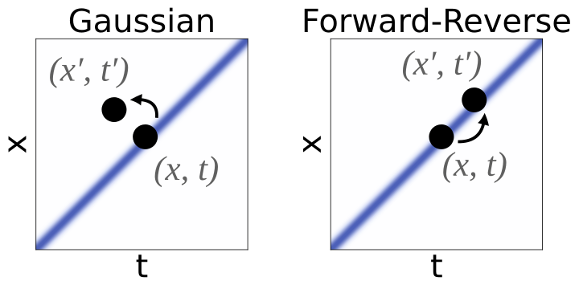

A stochastic interpolant from Gaussian noise to a two-mode data distribution.
Method
Learning across space and time
A stochastic interpolant connects noise to data. At each time t, it defines a density over locations x. How should we train
Energy-based Models by constructing contrastive comparisons between two points?
Spatial comparisons hold the noise level fixed. When modes are far apart, local comparisons struggle to recover the global mode weights,
leading to pathologies under multimodality. Temporal comparisons hold the location fixed and vary the time, and suffer when the data
has high density in low density region of the noise, i.e. support mismatch. Spatiotemporal comparisons vary both location and noise
level in the same comparison and avoid both pathologies.
In a one-dimensional Gaussian mixture, the two axes independently vary multimodality and support mismatch. Darker red indicates higher
estimation error.
A shared logistic loss
A clean sample
and a noise sample
give the stochastic interpolant
. Drawing
from the chosen time density
between 0 and 1 gives the joint density
. The Energy-based Model (EBM) represents the conditional density as
Class
and class
present a pair in reversed order against each other. With equally likely classes,
estimates the probability that the observation belongs to class
. The population-optimal logit is
.
For each method below, substitute its model logit
for
and minimize
over
.
Temporal, spatial, and joint comparisons
tNCE changes time at a fixed location
For tNCE,
. Draw
from the interpolant and propose
given
. Swapping the times keeps the position
fixed.
Both normalizers enter the comparison through
. If
is common at one time and rare at the other, few samples inform the density ratio there.
tCNCE changes location at a fixed time
For tCNCE,
. Draw
from the interpolant and propose
given
. Swapping the locations and keeping the sampled time fixed:
The shared normalizer
cancels from the logit.
At a given time, local comparisons within well-separated modes can reveal each mode’s shape while providing little information about their
relative masses.
stNCE compares both endpoints
stNCE asks which endpoint came from the interpolant. Draw
from
, then perturb it to
using
.
For a fixed kernel,
collects the known time prior and perturbation terms:
Temporal and spatial comparisons necessarily traverse low density region under certain scenarios. Spatiotemporal comparisons could instead
remain within high density region.
Choosing a perturbation kernel
The kernel determines which energy differences the classifier sees. A meaningful proposal places the second endpoint in a region with high
density at the proposed time.
Mixture (stNCE-m)
Change time as in tNCE or change location as in tCNCE with equal probabilities.
keeps the location fixed and
keeps time fixed.
White noise (stNCE-w)
Perturb the location with isotropic Gaussian noise of standard deviation
and draw a new time based on Gaussian perturbation.
Forward–reverse (stNCE-o and stNCE-s)
First propose
, then choose the spatial transition according to the direction of the time step:

The blue band marks high density in space and time. The forward–reverse kernel uses the interpolant dynamics to guide the proposal along
it.
Noising,
.
For the linear interpolant with standard Gaussian reference noise, moving toward
scales the current sample and adds Gaussian noise. For
the exact transition is
Denoising,
.
Moving toward the clean-data endpoint requires the reverse transition. Its ideal form is the Bayes inverse of noising. For
, we use the following Gaussian approximation for the reverse SDE, whose mean depends on the space score
:
Oracle and self scores. stNCE-o uses the true space score when available. stNCE-s uses the current model’s score
. The stop-gradient operator
holds the score in the kernel fixed during each gradient update. The next step uses the refreshed score.
Experiments
Image likelihoods and molecular energies
MNIST Gaussian mixture
How accurately can a model learn the density of well-separated digits? Each of 100 MNIST images, ten per digit class, is the center of a
Gaussian in 784 dimensions. The mixture’s exact density is known, so we can measure the error in the model’s log density directly.
Switching from white noise to the forward–reverse kernel reduces mean LogMSE from
9.96 to 4.80. Dual score matching achieves the lowest error among the methods shown, while stNCE-s takes about half as
long per training step.
LogMSE is the log of the mean squared error between model and true log densities, reported as mean ± standard deviation. Time is the
average time per training step. Lower is better for both.
Full results in the paper.
Method
LogMSE
Seconds/step
tNCE (temporal)
12.37 ± 0.02
0.39
CTSM (temporal)
12.44 ± 0.45
0.68
tCNCE (spatial)
12.28 ± 0.26
0.40
DSM (spatial)
16.39 ± 0.07
0.70
stNCE-w (white noise)
9.96 ± 0.05
0.40
stNCE-s (forward–reverse)
4.80 ± 0.10
0.36
Dual score matching
3.73 ± 0.18
0.70
ImageNet64
Combining stNCE-s with denoising score matching (DSM) gives an estimated test negative log likelihood of
2.94 bits per dimension in a single network evaluation. Dual score matching gives 3.36.
Test images assigned the highest densities (left) and lowest densities (right).
Molecular configurations
We compare samples from learned energy models with equilibrium configurations of Alanine Dipeptide (ALDP) and Chignolin. On Chignolin,
stNCE-s with DSM achieves comparable Potential-of-Mean-Force (PMF) accuracy to FPE at roughly half the training cost.
@inproceedings{yu2026learning,
title = {Learning {Energy}-{Based} {Models} from {Stochastic} {Interpolants} using {Spatiotemporal} {Differences}},
url = {https://openreview.net/forum?id=QnHvCvmOn6},
booktitle = {The {Fortieth} {Annual} {Conference} on {Neural} {Information} {Processing} {Systems}},
author = {Yu, Hanlin and OuYang, RuiKang and Kaushik, Partha and Klami, Arto and Gutmann, Michael U. and Chehab, Omar},
year = {2026},
}